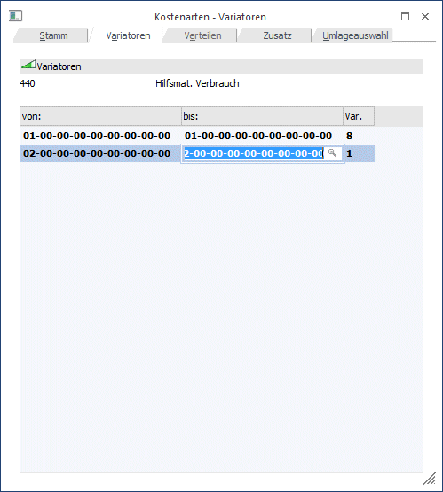

In diesen Eingabefeldern legen Sie fest, für welche Kostenstellengruppen welcher Variator gilt (d.h. die Anlage der Kostenstellengruppen sollte auch so erfolgen, dass die in einer Gruppe enthaltenen Kostenstellen in Bezug auf den Beschäftigungsgrad einander ähnlich sind). Der Variator gibt den variablen Kostenanteil an. Wir empfehlen auch im Falle von Gemeinkosten mit Variator null eine Kostenstellengruppe einzutragen.
Achtung
Einzelkostenarten und Erlöskostenarten haben immer den Variator 10, da Einzelkosten direkt zurechenbare Kosten sind und zu 100 Prozent variabel sind. Gemeinkosten hingegen können die volle Bandbreite des Variators ausnützen. Untenstehend einige mögliche Varianten zur Eingabe eines Variators:
|
VARIATOR |
Variable Kosten |
Fixe Kosten |
|
0 |
0 % |
100 % |
|
5 |
50 % |
50 % |
|
8 |
80 % |
20 % |
|
10 |
100 % |
0 % |

Beispiel
Stromkosten, die rund um die Uhr für die Belüftung der Lagerräume sorgen (=fixer Anteil), steigen tagsüber, wenn produziert wird, um das Vierfache an. Um diese Mischung aus variablen und fixen Anteilen in der Kostenart kostenstellengruppenbezogen zu hinterlegen, verwendet man den VARIATOR.
Dieser Variator (von 0 bis 10) gibt an, welcher Kostenanteil variabel ist.
Im obigen Beispiel wäre der Variator z. B. 8, d.h. achtzig Prozent der erfassten Stromkosten wären variabel (Variator = 8) - der fixe Anteil würde demnach 20 Prozent ausmachen.
Buttons
Ø OK
Durch Drücken der OK-Taste (F5) wird die neue Kostenart gespeichert.
Ø Ende
Mit Ende verlassen Sie den Bildschirm, ohne die Eingaben zu speichern (wenn Sie zuvor nicht OK gedrückt haben).
Ø Navigationsleiste (VCR)
Über die sogenannte VCR-Buttonleiste kann durch Mausklick zwischen den einzelnen Kostenstellen, bzw. Abteilungen geblättert werden:
ü  Damit kann der erste Datensatz angesprochen
werden.
Damit kann der erste Datensatz angesprochen
werden.
ü  Damit kann der vorherige Datensatz
angesprochen werden.
Damit kann der vorherige Datensatz
angesprochen werden.
ü Damit kann der nächste Datensatz angesprochen werden.
ü  Damit kann der letzte Datensatz angesprochen
werden.
Damit kann der letzte Datensatz angesprochen
werden.
Ø Tabelleneinstellungen speichern
Die Spalten einer Tabelle können grundsätzlich an beliebige Positionen verschoben, bzw. in der Breite entsprechend angepasst werden. Durch Anwahl des Buttons "Tabelleneinstellungen speichern" werden die Einstellungen benutzerspezifisch gespeichert und bei dem nächsten Aufruf des Programmpunktes wieder vorgeschlagen.
Ø Gesamteinstellungen speichern
Im Gegensatz zu "Tabelleneinstellungen speichern" können mit "Gesamteinstellungen speichern" mehrere Tabellenaufbauten gespeichert und nach Wunsch geladen werden. Zusätzlich werden Sonderfunktionen der Tabelle (z.B. "Spalte gruppieren") ebenfalls bei der Speicherung bedacht.